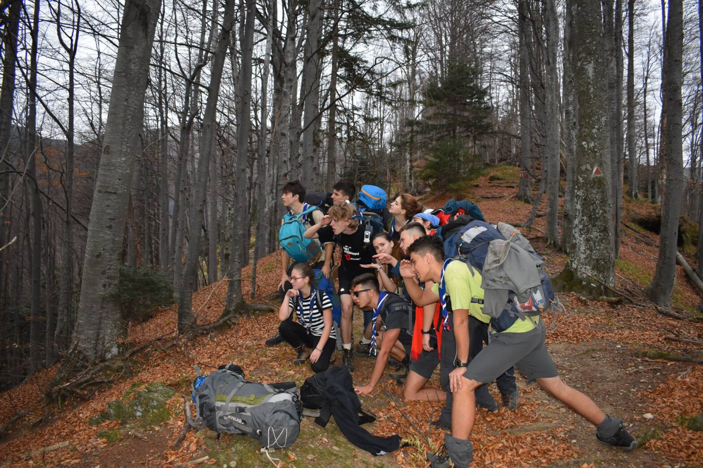

🏔️ Hike • 2018
Hike de toamnă 2018: Suru

Același hike de toamnă, văzut din 4 perspective diferite. Cum au trăit 3 cercetași cabanieri prima ieșire cu exploratorii, dar și cum “Patrula Șandru ” a fost un adevărat ajutor celor noi, aflați în rândurile de mai jos.
- ‘‘Să mergi într-un hike de toamnă cu cercetașii mi se părea un concept foarte vag. Nu a fost o simplă excursie la munte de câteva zile. Nici nu mă asteptam. Dar cu siguranță a fost foarte diferit de ce experimentasem până atunci. Pot spune ca eram destul de speriată de ce urma să se întâmple pentru că nu cunosteam toate persoanele cu care urma să merg si aveam impresia că o să fiu pe cont propriu și o să-mi fie greu. Eram conștientă de condiția mea fizică nu prea dezvoltată și nu voiam sa încetinesc tot grupul, de aceea a fost o provocare pentru mine și acum sunt foarte fericită că am acceptat-o. Fiecare moment al excursiei a fost special. De la început, de dimineață cand a trebuit să plecăm, am știut că totul va decurge foarte bine. Oamenii cu care urma să-mi petrec urmatoarele ore mi-au inspirat siguranță si familiaritate. Deși eram cu toții adormiți, am ascultat muzică si posturi de radio care ne amuzau, am luat-o pe drumuri uitate de lume și am ajuns intr-un sfarsit la destinație. Opriți la poalele muntelui pe care urma să-l urcam. Am fost lăsați singuri până ce venea celalalt grup de copii. Atunci am început să glumim, să povestim și asta ne-a ajutat să ne mai destindem. Odată ce am fost toți la un loc și am distribuit mancarea noastră (lucru care m-a impresionat pentru că fiecare trebuia să care ceva pentru celalalt și pentru sine) am pornit din loc. Primele minute au fost cele mai grele. M-am bucurat că nu doar eu aveam aceasta impresie si credeam că nu mai ajung niciodata la destinație. Nici nu prea stiam unde era acea destinație. Chiar dacă regream fiecare nasture pe care l-am luat în bagajul meu, nu am uitat sa admir peisajul. Mi s-a parut că sunt un fotograf pentru calendare si aleg poza perfectă pentru luna octombrie. Doar că aici nu intervenea photoshop-ul. Era real. Eram acolo, trup si suflet. Când ridicam capul uitam de tot ce mi se parea greu. Muntele îmi ducea toate greutățile. Stiam că aparțin acelui loc si ca acolo mi-ar plăcea să rămân. Dar tot adoram momentele cand liderul de grup anunța “pauză educativă”. Și îmi pare bine că am reținut ce ne învață în aceste mici opriri pentru ca erau informații importante și bine punctate. Traseul devenea tot mai dificil, noi tot mai obosiți. Îmi placea să fiu așa aproape de munte atât de mult timp, dar ajunsesem la limite pe care nu știam că le am. Am fost și mai șocată când mi le-am depășit. Am fost mândră de această reușită. Sfârșitul drumului a fost noaptea. Am prins putere când am văzut că pe jos apareau mici ambalaje sau gunoaie, știam că nu mai avem mult. Când am zărit luminița de la cabană am simțit că zbor. Imediat ce am ajuns, m-am așezat și am privit în spate. Priveliștea m-a facut să uit să respir. Am privit mult luminile orașului și cerul. Simțeam că toată oboseala de până atunci meritase. Când ne-am strâns în sala de mese deja mă simțeam ca în familie. Cu oamenii de lângă mine mă simțeam ca acasă. Asta e muntele, poate că separă așezările unele de altele, dar și cele mici rămase sunt mai unite. Exact la fel ni s-a întâmplat și nouă. Când liderul de grup a anunțat cum vom sta in camere am ramas șocată. Nu mă așteptam la hotel de 3 stele, dar clar nu mă gândeam că vom fi asa “apropiați”. Dar nu mă deranja ideea. M-am simțit ca in filme cand am realizat că noi împărțeam în acel moment cam tot. Patul, baia, mâncarea. La masă a fost mereu plăcut. Ce avea celălalt era mai bun, împărțeam tot. A urmat momentul spiritual. Până atunci nu stiam că există și eram destul de interesată de ce însemna. Mi-a placut ceea ce am facut. Am simțit că era pe bune si că nimeni nu exagera doar de dragul de a ieși ceva frumos. Și astfel a ieșit ceva frumos. Noaptea a fost mult mai normală decât mă așteptam. Ne-am spălat frumos pe dinți și ne-am culcat. Dimineață la fel de normal. Înviorarea nu a fost ceva plictisitor ca la orele de sport, ci modul cum totul a fost pus intr-un joc m-a facut chiar să vreau să particip. Momentul spiritual de după mi-a pus niște semne de întrebare, dar până la urmă mi-a plăcut pentru că ne ajuta foarte mult la legatura dintre noi. Apoi am început să urcăm. De data aceasta îmi era foarte clar unde trebuia să ajungem, dar mi se părea ceva “abstract”, prea departe, prea irealizabil. Am prins curaj atunci când am vazut unde am ajuns după câteva minute si cat de “prietenos” este muntele. Prețuiam fiecare pas, fiecare vorbă schimbată, fiecare privire aruncata în jos. Pietrele, pârâul, pământul, copacii îmi aminteau că nu ma joc un joc pe calculator, ci că eu chiar trăiesc ce mi se întâmplă. Vârful se apropia și eu eram tot mai doritoare de a ajunge acolo, chiar dacă drumul era unul frumos. Nu o să uit un moment care, deși studiat la logică, în teorie mi se părea ceva doar de voință, am aflat ca în practica lucrurile sunt mai serioase. Atunci cand părea că vei ajunge în vârf, doar ca să mai descoperi peste cativa pasi că mai ai destul de urcat. Am zis că trebuie să continui, nu aveam de ales. Și am înaintat și ultimul pas m-a facut să mă simt victorioasă. Câteva secunde am stat pe pământ, cu ochii închiși, nevenindu-mi să cred că am reușit. De acolo totul a fost lejer, am privit în jur. Se vedea absolut tot de acolo. Mă simteam așa de mare și restul așa de mic. După am facut poze, am mâncat și ne-am relaxat. M-a distrat ideea de “rachetă” și mi s-a părut o invenție simplă si drăguță realizată de cei mari. La coborâre a fost mai simplu, chiar dacă aveam grijă la fiecare mișcare pe care o făceam. Am avut mai mult timp de vorbă și lumina ii dădea un contrast frumos peisajului. Am ajuns la cabană foarte mulțumiți. Mereu mi-a placut ideea de foc de tabără, așa că atunci când am auzit că vom organiza și noi unul am fost foarte încântată. Și treaba asta am facut-o ca la cercetași, am cărat lemne, o singură persoană a aprins focul in mod clasic și fără ajutor și toți am stat și am cântat în jurul lui. Și jocul de după ne-a dat de gândit și ne-a dezvoltat abilitățile de a găsi răspunsuri fără a pune întrebări. Apoi ne-am dus toți la culcare, impresionați de ceea ce am vazut in acea zi, dar întristați de gândul că aceea era ultima noastră noapte împreună. Ultima zi a început ca celelalte, până când a trebuit să ne luam la revedere de la cabană și tot ce ne-a oferit. Coborârea de pe munte a fost dificilă, dar asta o făcea intrigantă. Eram atențiune la ce se află în jurul nostru, la pașii pe care ii făceam, la oamenii de lângă noi. Pe parcursul acestor zile reușisem să devenim un întreg. Porțiunea lejera din drum ne-a permis să vorbim între noi și să schimbăm cunoștințe. Când am ajuns la dubițe, eram ușurată că am terminat drumul, dar și tristă din același motiv. Chiar dacă mi-ar fi plăcut să fiu alături de toată lumea în drum spre casă, persoanele de lângă mine m-au făcut să mă bucur de fiecare secundă. În mașina noastră a fost atâta distracție și veselie și interacțiunea cu cealaltă dubiță a fost amuzantă, încât nu mai voiam să ajung vreodată acasă. Despărțirea a părut ireala și totul s-a terminat prea rapid. Acest hike m-a ajutat să ies din zona mea de confort și m-a învățat foarte multe. A fost o experiență unică și sunt dispusă să mai repet ceva asemănător cu fiecare ocazie.
Mulțumesc cercetași, mulțumesc Cabana Scout.”(NECTARIA) - ”Era aproape sa se crape de zi. Cu 10 ore înainte îmi cumpărasem rucsacul pentru drumeție și frontala. Nu aveam idee dacă am luat prea multe în bagaje sau prea puține. Mă simțeam nepregătit. Dimineața, la întâlnirea de la Tineretului, am ajuns la timp pentru că am fugit de-a lungul intersecției de la Timpuri Noi ca să prind tramvaiul 19.După-amaiza, după ora 1, eram la începutul traseului care ducea la Cabana Suru. Acesta s-ar putea să fie momentul meu preferat al acestor zile. La poalele urcușului, peste pietrele și peste frunzele de pe cărare toate posibilitățile ce puteau să se realizeze pe durata hike-ului se simțeau în tăcere. Emoțiile, amintirile și gândurile ce aveam să le am se aflau în natură deja. Inefabilă, dar intuibilă părea să fie căldura ce urma să o simt la focul de tabără, nu de la foc, ci de la cântece și de la apropierea dintre cercetași; înălțimea ce avea să fie parte din mine când aveam să fiu pe rocile din vârful muntelui; agitația veselă a umbrelor arcuidu-se în sufletul meu dimineața la înviorare.Într-adevăr, rucsacul nu era bine pregătit, am uitat de exemplu să îmi iau mâncarea, obstacol peste care am trecut prin același mod cum am trecut peste: obseală, terenul alunecos sau uitarea versurilor de la un cântec – cu ajutorul cercetașilor. Se pare că în ciuda grijilor mele de dinainte de a pleca din București nu avea ce să mi se întâmple rău. Cred că toate presimțirile pline de speranță de la începutul urcușului se datorau începutului unui sentiment de siguranță și de apartenență. La poalele muntelui conștientizarea imensității naturii a fost motorul prim al conștientizării puterii colective, al uniunii și al prieteniei dintre cercetași.”(IUSTIN)
- ”Acest hike a început perfect cu Adi “abandonându-ne” și spunându-ne că se duce să îi ia și pe ceilalți . Prima parte a hike-ului a fost interesantă deoarece eu nu mai depusesem niciun fel de efort fizic de vreo 3 ani . Sâmbătă când era hike-ul in sine mie unul mi s-a părut mai amuzant , asta fiind și ziua în care m-am împrietenit cu majoritatea oamenilor . In seara aceea s-a făcut și un foc de tabără care mi-a amintit de ce am venit pentru prima oară la cercetași și în afara de melodiile dulci care îmi încălzeau sufletul mai era si fumul care îmi încălzea trupul . In hike-ul acesta mi-am făcut multe amintiri plăcute cum ar fi Zaha primind bătaie cu salamul , eu întârziind la masă , ceea ce a rezultat în mine făcând genoflexiuni și dansul meu cu Panait în care m-a făcut să mă simt ca o “Prințesă ” . Nu aș schimba nimic din acest hike , a fost unul grozav, dinastia prefera că la următorul hike sa fiu tot cu Dițu și Zaha in dubită (dacă mai mergem cu dubița ).” (RICHARD)
- ” Hike-ul de toamnă, organizat de Cabana Scout, s-a dovedit a fi o nouă cărămidă adăugată peretelui meu de amintiri. Am să încep povestirea cu seara dinaintea plecării, în care a avut loc o nelămurire legată de transport, iar, ca urmare, jumătate dintre noi au trebuit să găsească altă variantă de transport. Evident că patrul Șandru, cea mai responsabilă și descurcăreață patrulă, dar și câțiva alți cercetași mai vechi au mers cu microbuzul și trenul sub atenta supraveghere a unui ajutor de lider. Astfel ne-am strâns la ora 6 dimineața în Autogara Militari și era să plecăm cu un om în minus, însă a fost adunat de pe drum la scurt timp după ce a plecat microbuzul. După un shooting foto în autocar în cele din urmă am ajuns cu toții în Vâlcea, de unde am luat trenul care urma să ne ducă în Sebeș unde ne aștepta Adi cu vreo 200 de militari. După o plimbare prin plaiurile mioritice ne-am întâlnim și cu restul grupului. Înainte să începem urcarea spre cabana Suru, ne-am hotărât să mâncăm sfintele șnițele cu sos de usturoi. Patrula Șandru a stat ultima, ceea ce s-a dovedit a fi un avantaj pentru noi deoarece am avut posibilitatea de a face multe pauze (pauzele lungi și dese, cheia marilor succese) în care ne-am bucurat de peisaj, am făcut poze și am contemplat teme filozofice. După un drum lung și alunecos(nu știi niciodată ce stă sub o frunză) în sfârșit am ajuns la cabană. Cabanierul ne-a așteptat ca pe niște vechi prieteni,cu tavă plină de cești de ceai cald,ce, după o masă bine meritată și sățioasa,a devenit ,cel mai puternic somnifer de care am auzit. Cu greu am trecut peste momentul spiritual unde ceaiul își făcea în totalitate efectul. Trecuți și de această “probă” a somnului, am ieșit o parte afară să mai luăm puțin aer și să adminaram Sibiul alături de milioanele de stele ce ne-au dat o stare de melancolie puternică. Fiind îmbătați de aerul puternic de munte , ne-am retras încet fiecare în sacul sau de dormit și ne-am propus ca a doua zii să putem admira mai mult peisajele nocturne. Zorii celei de-a două zi ne-au trezit din visele frumoase, apoi l-am văzut pe Adi care ne chemă la înviorare :(. După înviorare ne-am așezat la o masă copioasă urmând să ne pregătim de plecarea spre vârful Suru. Nici nu am apucat să ne dezmeticim bine căci timpul a sosit să plecăm pe traseu . Îmi amintesc cu bucurie covorul multicolor de frunze ce acoperea pământul prin pădure. În timp ce urcam pe traseu un brad mi-a observant cămașa atârnând de ghiozdan și a sustras-o ușor fără să mă întrebe, trebuiind să mă întorc să o caut. Urcarea a fost foarte frumoasă, iar rezultatul acesteia a meritat fiecare pas.. Priveliștea de pe vârful Suru este una de neuitat! În timp ce mâncam ne-am adus aminte de ce îl iubim noi pe Zaha(cum să uiți să cumperi maioneză). După ce ne-am terminat fiecare bucățica modestă de măgura și am lansat cu succes racheta, am început să coborâm ușor, ușor spre cabană unde cabanierul și Gilbert ne așteptau cu un ceai cald.(șocați zic eu că am renunțat la deja tradiționalul hike de noapte). Seara după o masă copioasă am început un foc de tabără unde am cântat timp de vreo două ceasuri și am luat parte la un moment spiritual făcut de Pitica și Ana. Ultima zi nu a fost lipsită de peripeții. După o deșteptare mai mult sau mai puțin agreată de toată lumea, învoirarea fu, cum s-ar spune pe la noi “ce trebuie”. Ghiozdanul în spate, stomacul plin și uite așa la drum am pornit. Coborârea ar fi putut fi mai lină, însă eu personal credeam că nu există termenul de “coborâre” fără a da o impbrațișare caldă tuturor pietrelor și copacilor, de pe bucata nemarcată a traseului evident. Cu toții știm că o patrulă coordonată este o patrulă fericită, astfel datorăm eficiența pe parcursul drumului sistemului nostru de comunicații foarte bine pus la punct și fără nici un pic de spam. Ajunsi la mașină, în formație completă, nici mai mulți, nici mai puțini ne îmbarcarăm în vehiculele puse la dispoziție de către minunatul nostru Lider Suprem Tovarășul Adi, și bineînțeles compatriotul său Gilbert. Însă finalul nu se lasă fără peripeții, ceea ce părea o călătorie inocentă cu mașina înapoi spre casă se dovedi rapid a fi un război aprig între două facțiunii radical diferite, însă cu scop comun… acela de a-s pune bețe în roate unii altora, oh da și de a speria orice șofer din coloană pe o rază de 200 de metri. Bătălia a fost una aprigă, lipsită de moravuri sau de reguli ca vorba aia, “totul este permis în reciclare și război”. Atacurile au fost tulburătoare unul mai feroce și aprig ca celălalt, asemenea unui foc lăsat nesupraveghiat, haosul puse stăpânire pe situație… pentru încă vreo 300 de metri pentru că aparent colan din trafic nu ne-a ținut prea mult în loc, o binecuvântare și un blestem. Să nu lăsăm însă sorții eroii noștrii curajosti care acum sunt într o lume mai bună în urma Marelui Război Vehicular.
In Bucuresti parinții ne așteptau cu sufletul la gură să vadă dacă au scăpat de o pacoste și tot odată curioși să vadă cum ne-am distrat în cele 3 zile la munte.”(PATRULA ȘANDRU)